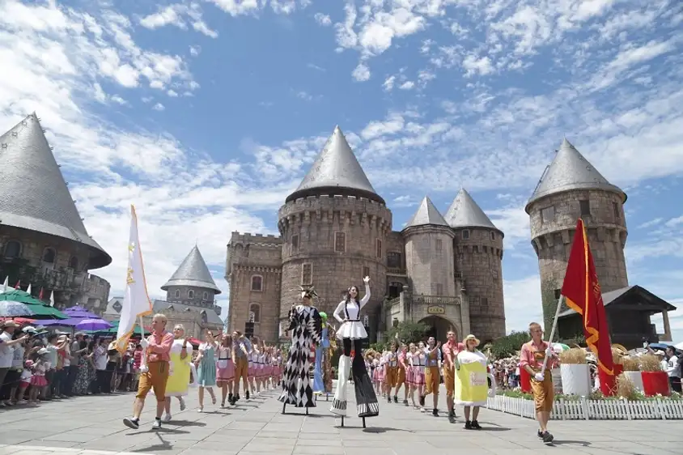

Chơi gì khi đến Cầu Vàng Đà Nẵng?
Đã cất công lên đến Bà Nà thì bạn không thể check in Cầu Vàng Đà Nẵng
rồi quay về đúng không nào. Ngoài Cầu Vàng, ở đây còn vô vàn điểm tham
quan lý tưởng đang chờ bạn khám phá như:
- Làng Pháp được xây dựng dựa trên cảm hứng từ chuyến du hành vòng quanh
nước Pháp của người nước ngoài đầu tiên đặt chân đến Bà Nà - nhà truyền
giáo Pigneau De Behain người Pháp. Làng Pháp với những công trình mô phòng
nhà thờ, thị trấn quảng trường… hiện lên như một nước Pháp thu nhỏ. Ngoài 32
tòa nhà tráng lên, ở đây còn có những khu mua sắm, hệ thống quán cà phê, nhà
hàng và khách sạn sang trọng…
- Vườn Hoa Le Jardin DAmour hay vườn hoa Tình Yêu được xây dựng trên quy
mô 21.000 m2 được ví như cảnh tiên nơi trần thế. Đây là nơi hội tụ gần 1000
loài hoa đến từ các nước khác nhau trên thế giới.
- Bảo Tàng Tượng Sáp là khu trưng bày tượng sáp của những nhân vật nổi tiếng đầu tiên tại Việt Nam.
- Hầm Rượu Debay được người Pháp xây dựng lần đầu vào năm 1923 và được đặt tên theo đại úy người Pháp là người đầu tiên phát hiện ra Bà Nà.
- Trải nghiệm đường trượt đôi tốc độ đầu tiên tại Việt Nam cũng là một trải nghiệm vô cùng đáng nhớ cho những ai yêu thích cảm giác mạnh.
- Bung xõa thả ga tại Fantasy Park với 90 trò chơi với cấp độ khác nhau cho mọi lứa tuổi.
- Chiêm bái quần thể công trình kiến trúc tâm linh đặc sắc như Chùa Linh Ứng, Miếu Bà, Thích Ca Phật Đài, Trú Vũ Trà Quán…
- Hòa mình vào không khí lễ hội nhộn nhịp của: Lễ hội Hoa mùa xuân, Lễ hội Carnival mùa hè, Lễ hội bia B'estival, Lễ hội Halloween, Lễ hội Rượu Vang mùa thu, Lễ hội Mùa Đông…cũng sẽ là kỷ niệm đáng nhớ trong chuyến du lịch Đà Nẵng của bạn.
